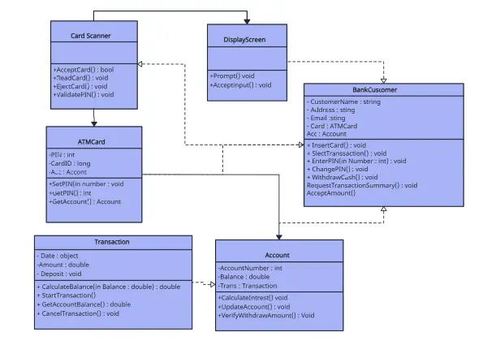
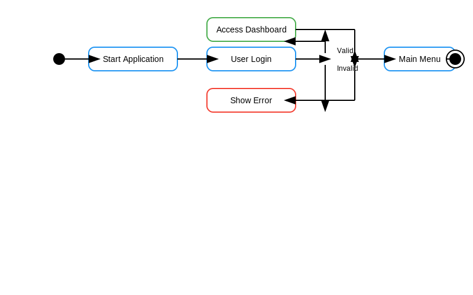
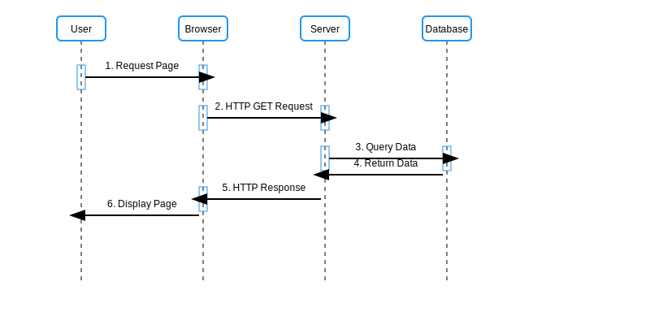
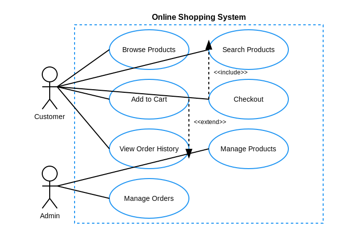

Welcome to UML Diagrams Explorer
This interactive website showcases different UML diagrams used in software engineering. Navigate through the menu to explore each diagram type and learn about their notations.
What is UML?
Unified Modeling Language (UML) is a standardized modeling language in the field of software engineering. It aims to provide a standard way to visualize the design of a system.
Nature of Software Design
Just like how nature follows patterns and structures, software systems also require well-defined architectures. UML diagrams help us visualize these structural patterns in our software designs.
Class Diagram

Class Diagram Notations
- Class: Represented by a rectangle divided into three compartments: class name, attributes, and operations
- Attributes: Listed in the middle compartment in the format: visibility name: type
- Operations: Listed in the bottom compartment in the format: visibility name(parameter: type): return_type
- Visibility: + (public), - (private), # (protected), ~ (package)
- Relationships: Association, Aggregation, Composition, Inheritance, Dependency
Activity Diagram

Activity Diagram Notations
- Action: Rounded rectangles representing specific activities
- Control Flow: Arrows showing the sequence of activities
- Initial Node: Solid circle indicating the start of the workflow
- Final Node: Bull's eye (concentric circles) indicating the end of the workflow
- Decision Node: Diamond shape for conditional logic
- Fork/Join Node: Horizontal bar for parallel activities
Sequence Diagram

Sequence Diagram Notations
- Lifeline: Vertical dashed lines representing objects or actors
- Activation Box: Tall thin rectangles on lifelines showing active periods
- Message: Horizontal arrows between lifelines showing communication
- Synchronous Message: Solid arrow for blocking calls
- Asynchronous Message: Stick arrow for non-blocking calls
- Return Message: Dashed arrow showing return values
Use Case Diagram

Use Case Diagram Notations
- Actor: Stick figure representing a role played by a user
- Use Case: Oval shapes representing functionalities
- System Boundary: Rectangle frame enclosing all use cases
- Association: Solid line connecting actors to use cases
- Include Relationship: Dashed arrow with <
> stereotype - Extend Relationship: Dashed arrow with <
> stereotype - Generalization: Solid line with triangle arrow for inheritance